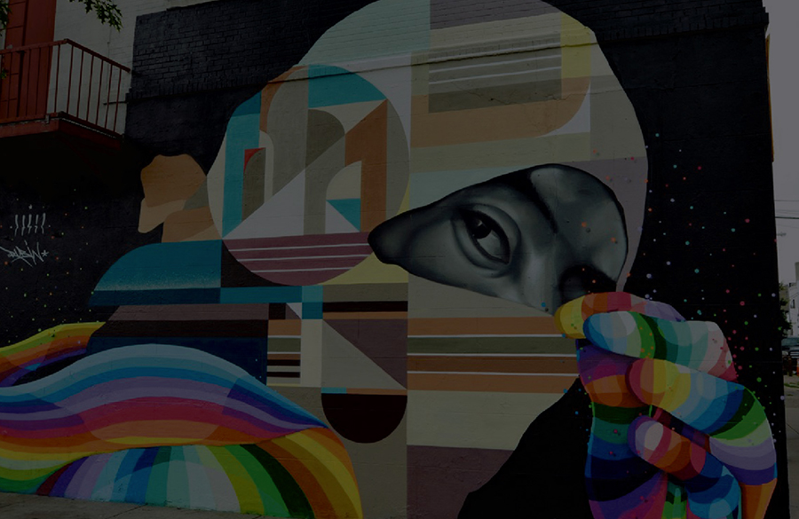
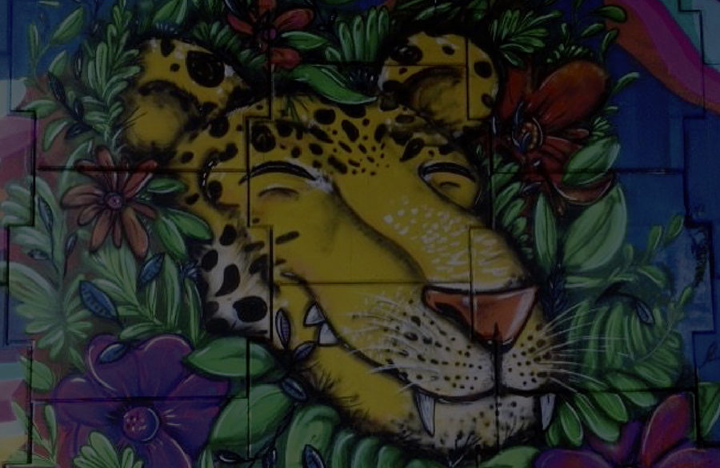
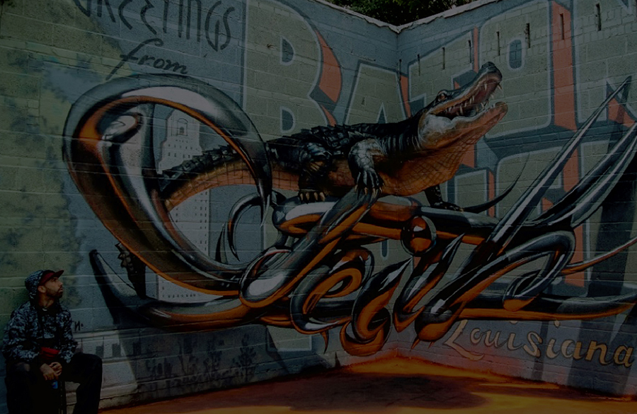
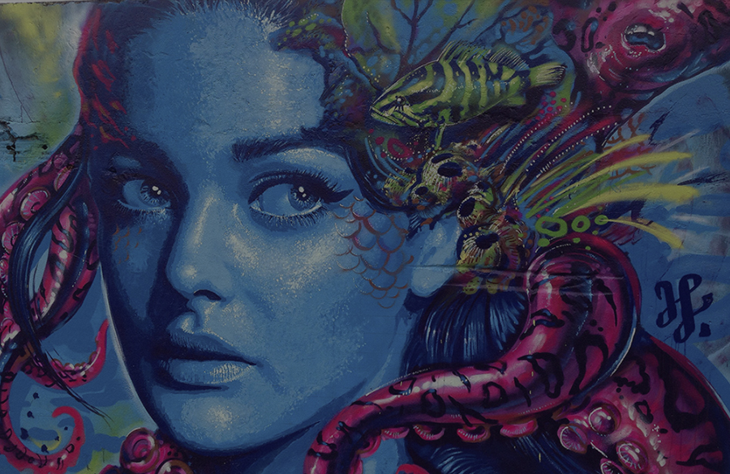
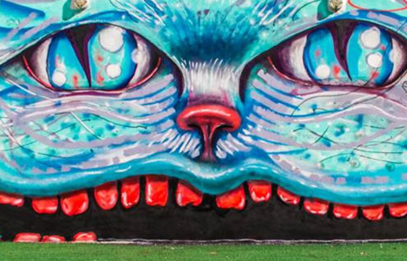

Propósito
Existem inúmeras formas para expor arte na rua. Nosso foco é compartilhar registros de Graffitis, Muralismos, Street Arts, e afins dentro dos cenários urbanos.
Localização
Por meio de mapas, criaremos uma perspectiva diferente em apresentar a cultura da arte de rua.
Tempo Real
Criamos um perfil para os estilos de arte e artistas. .Nossa ideia é trazer uma linha do tempo dentro da localização do Registro.
Eventos
Encontros, exposições ou até festas onde a arte urbana está presente também serão divulgadas e compartilhadas pelo aplicativo, permitindo assim uma intereção à cultura local.
Territórios
Juntando todas as informações que a partir do registro, índices de predominância em cada região do mapa determinarão os artistas com mais atividade no cenário urbano.
Usabilidade
O usuário poderá navegar através de Mapas, Calendários de Eventos, Portfólios de artistas, Índices de Territórialismo, Compartilhamento e Registros.
-

Mapas
A partir da tela de Mapas, apresentamos as áreas registradas pelos usuários.
-

Calendários de Eventos
Dentro da cidade, acontecem inúmeros eventos relacionados a arte.
-

Artistas
Criamos um portfólio para cada artista que possui registro dentro do aplicativo.
-

Índice de Atividade
A partir do número de registros, cria-se um índice de atividade do artista na área urbana.
-

Compartilhamento
A experiência do usuário em compartilhar seus registros, mantém a R.U.A. nutrida.
-

Registros
Todo usuário cadastrado deve fazer o registro em tempo real.
{kind=link}
{kind=link}
{kind=link}
{kind=link}
{kind=link}
{kind=link}
Experimente
Aplicativo disponível para IOS e Android.